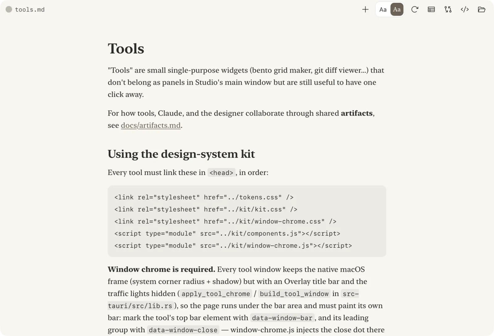

Markdown Editor
V.0.5
I use this one a lot, due to editing files for Claude. Typora is lovely, but it doesn't support showing the git diffs.
There's a lot of fiddly details to get a good text editor to work well. I haven't put as much time into this as I would like, but I use it almost every day. Funny how Markdown has become the writing format of choice, although it's always been more technical-sided.